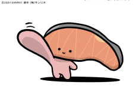
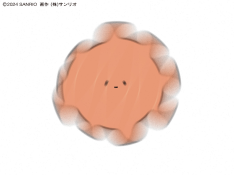
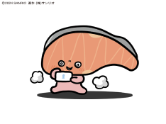

Kirimi-chan was born with the hope that people would enjoy the moment they cut her into fillets. Today, along with her many friends, she is a partner at the dinner table, waiting for people to enjoy her. She is very good friends with Kamaboko-chan.
Kamato and the girl. She loves girl talk. She has some strange moments with Kamato, but she is generally caring, so they don't dislike her. She has some thoughts about the world.
She is Kirimi-chan's pet. Kirimi-chan rescued her from a protective takuwan-wan facility. At first, she was not very affectionate, but now she is very attached. She always sleeps with Kirimi-chan.
She seems to be daydreaming, but she's not. She is usually quiet, but she thinks about many things more than others. She is good friends with Saba-kun. She always sleeps with a lotus spoon.
A narcissist and rich. Her eye color is blue. Or so it seems, but it's actually colored contacts. She constantly says cheesy things, but no one really pays much attention.
He's a boy, but he's cute. He has eyelashes, yet he's still a boy. He uses a lot of emojis and loves cute things, making him more feminine than anyone else.
About 19 hours ago
Everyone worked hard this year too...! Let's try a little harder, okay...! https://t.co/6dEPRvaYRq
About 3 days ago
Hah... hah... the new gacha... I wonder when it will come...https://t.co/80kfNVhsVL
About 4 days ago
Let's do our best this week too! https://t.co/YvKyfYLtrh
